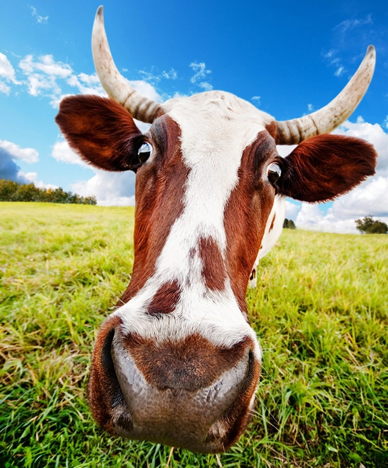

Домовенок Кузька и Бабёныш-Ягёныш. Продолжение.
Татьяна Александрова
Глава 2. Диета для коровы
И устроил. Решил ни во что не вмешиваться. Пусть дом развалится, пусть квашня убегает, пусть кошка сметану лакает — он будет только рад. Раз он «сказки» — справляйтесь сами.
Сидит Кузька на загнетке, лицо гордое, неприступное, ногу на ногу положил, губу отпрюнил, глазки лохмотульками завесил.
Ничего видеть не желает! Не желает, а сам подсматривает. Обида-обидой, а интересно. Всего семь веков домовенку, это как семь лет ребенку, а для детей любопытство выше обиды.
— Неправильно вы корову кормите, — выговаривает меж тем Матвейка Лидочке. — Ну что вы получаете от своей коровы?
— Молоко, сливки, сметанку, маслице, — загибает пальчики Лидочка.
— Как, все сразу?
— Нет! — хохочет девочка. — Сразу только молоко.
— Вот-вот, — сердито говорит мальчик, — а все оттого, что не дружите вы с невиданным прогрессом науки и техники. Сто лет коров травой кормили, а ни один не догадался, что если ее на другую диету посадить, то она и газировку давать может, и керосин, и масло подсолнечное.
— Да зачем же нам столько газировки и масла? — не соглашается Лидочка. — Наша Буренка в день три доенки молока дает, масла нам столько не надо.
— А зачем одно масло получать? Сегодня — масло, завтра — газировку, послезавтра — керосину хоть улейся!
— Ой, как здорово это ты, братец, все придумал! — захлопала в ладошки Лидочка. — А чем надо Буренку кормить, чтобы газировка была?
— Думаю, клубникой, — почесал в затылке Матвейка, — в крайнем случае, если не лимонада, то хоть сиропа надоим. Тоже вещь полезная. Так где, говоришь, у вас тут клубника растет?
Взяли ребята по лукошку и выскочили из избы.
— Вот, беда-беда, огорчение! — заголосил Кузька. — Теперь точно зиму без варенья голодать будем. А может, не будем? А может, вместо молока точно сироп пойдет?
Сироп не пошел. Не пошел он и в этот день, не пошел и в следующий. Может, чуть-чуть молоко ягодой пахло, а может, Лидочке так только казалось. Уж очень хотелось верить ей братцу! Даже Кузька несколько раз к крынке подбегал: и на вкус молоко пробовал, и так нюхал — молоко как молоко.
— Это все оттого, что клубники мало, — оправдывается Матвейка, — вот если бы ведер пять-шесть…
— Пять-шесть можно найти, — торопится Лидочка, — если со всей деревни собрать.
— Нет. Клубникой мы ее больше кормить не будем. Не в корову корм, как говорится. Мы пойдем другим путем. Будем изготавливать ряженку. Любишь ряженку?
— Люблю, — жмурится от удовольствия девочка, — сначала молоко надо потомить в печке, да пенки не забывать в молоке топить, потом…
— Е-рун-да! Эдак можно весь день эту самую ряженку делать. Как будто других дел нет. Ряженкой тоже должна заниматься корова. Говоришь, эту самую ряженку заквашивать надо? Чем-то кисленьким? Чего у вас тут кисленькое есть?
Не выдержал домовенок. Успел спрятать от городского гостя и уксус, и лимонную кислоту, и щавель на огороде травой закидал — не найдешь. Да вот не догадался в закуток заглянуть. А Матвейка догадался.
— Ура! Наша взяла! Я у вас тут прокисшее варенье нашел. Фу, воняет-то как противно!
— Дедушкиной наливкой воняет, — понюхала Лидочка.
— Может, и наливки подмешаем? — разошелся мальчик.
— Нет, за наливку от дедушки влетит. А варенье все равно испорченное.
— Стойте! Стойте! Не кормите мою Буренку испорченным вареньем, — кричит-надрывается Кузька, да только его никто не слышит.
Люди слышат и видят домовых, только когда верят в них. А Матвейка в него не верил, да и Лидочке не разрешил.
Никак не хотела Буренка забродившее варенье есть. Коровы-то и к свежему варенью без особой симпатии относятся, чего уж говорить о несвежем. Они больше травку любят, цветочки всякие, листья свекольные. Но Матвейку трудностями не испугаешь: развел он варенье в ведре воды и подставил корове. Она и выпила. Выпила, и такая веселая сделалась! Такая душевная!
Снесла широкой грудью дрын, который выход из коровника закрывал, и давай плясать «Камаринского» на огороде.
— Ой, — кричит Матвейка, — зачем ты мне рецепт до конца не сказала? Я не знал, что молоко для ряженки еще и взбалтывать надо.
— Не надо его взбалтывать, — голосит Лидочка, — это наша корова с твоей диеты с ума сошла!
Перелетели ребята птицами через забор, спрятались в густой траве, не знают, что еще Буренка выкинуть может.
Один Кузька не испугался, некогда ему пугаться: если хозяйство пропадает, то тут-уже не до испуга и не до обид.
Зацепился он за хвост сумасшедшей коровы, забрался ей на спину, дополз до уха и просит:
— Буренушка, миленькая, успокойся, пожалуйста.
— Я что? Плохо пляшу? — вытянулась морда у Буренки.
— Ты очень хорошо пляшешь, только на огороде плясать не положено.
— Тогда я на луг пойду, — икнула корова.
— А на лугу уже темно, никто не увидит, как ты прекрасно танцуешь.
— Да? Тогда я спать пойду, — согласилась Буренка, — вот высплюсь, еще не так спляшу.
— Какая-то неправильная у вас корова, — удивляется Матвейка в высокой траве, — совсем не понимает, чего это людям от нее требуется. Ничего, завтра как надоит с утра бабушка Настасья целое ведро ряженки, еще благодарить меня будете.
Утром Матвейку и Лидочку ждало жуткое разочарование. После утренней дойки бабушка Настасья принесла полдоенки молока, а не ряженки. И Матвейку никто не благодарил, наоборот, бабушка все сокрушалась: почему это Буренка молока дала мало и стоит такая грустная?
А Буренка была вовсе не грустная, просто она стеснялась всем в глаза смотреть. Сидит Кузька у коровки между рогами, жалеет ее.
— Не переживай, Буренка, ты правда хорошо танцевала на грядках.
— Неправда, коровы танцевать не умеют, это тебе каждый скажет.
— Как это не умеют? Как не умеют? Они не только на грядках умеют, но и танцы на льду показывают. Говорят же люди «как корова на льду».
— Правда говорят?
— Честное домовенковское!
— А чего тогда теленок с быком смеются?
— Смеются? Вот я им сейчас задам, — грозит кулаком Кузька, — они просто ничего не понимают в настоящем искусстве.
— Тогда можно я еще раз спляшу на грядках? — робко радуется Буренка.
Кузька даже с головы коровы свалился и шишку набил. Ну вот тебе и раз. Хотел просто успокоить коровку, а получилось, что уговорил ее новый налет на огород сделать.
— Нет, Буренка, — сказал Кузька, почесывая шишку, — пусть это девицы-красавицы на грядках пляшут. А мы с тобой существа серьезные, мы делом заниматься будем.
Продолжение следует